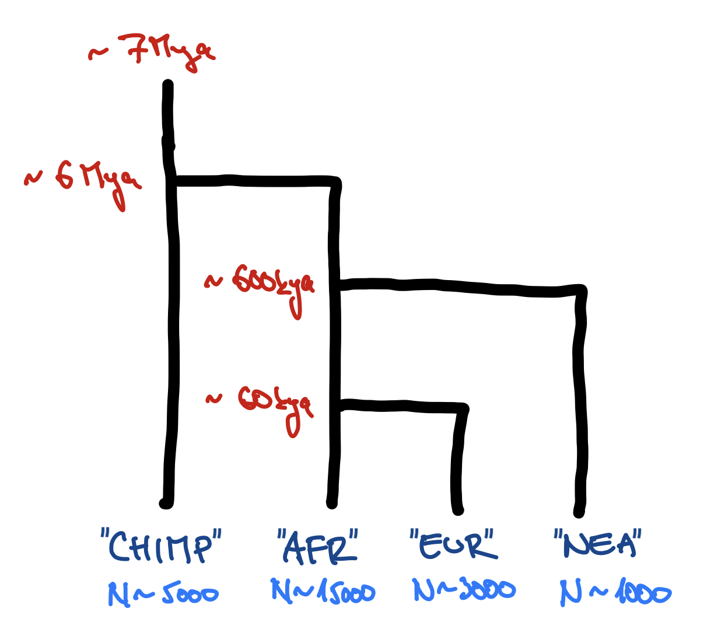
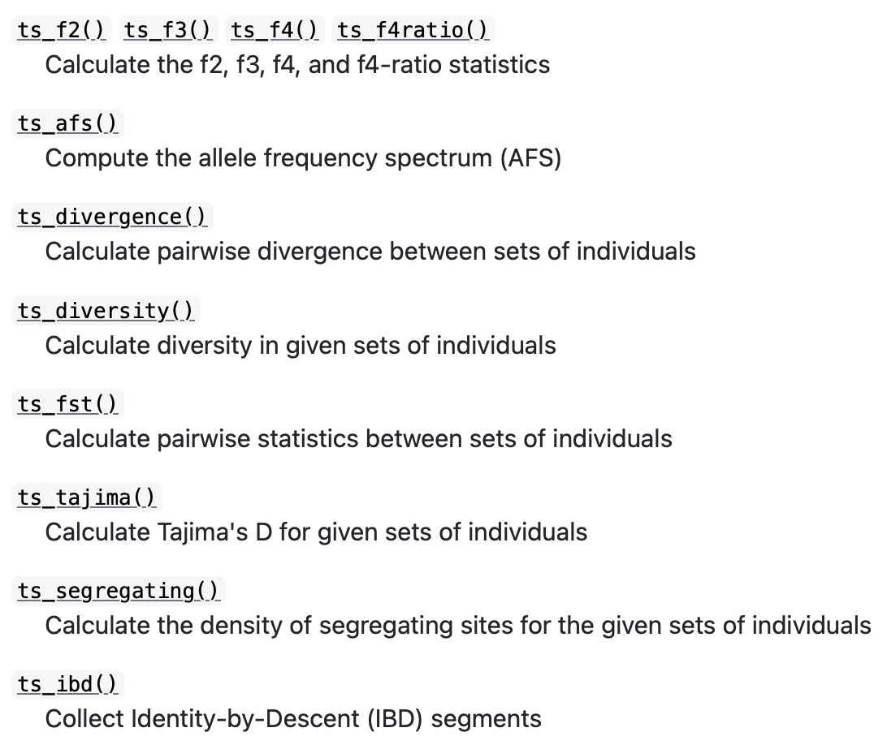
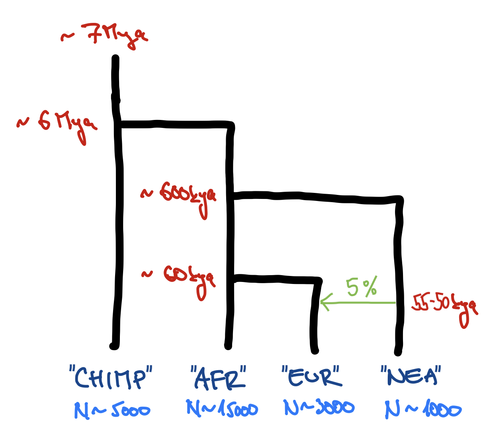

Many problems in population genetics cannot be solved by a mathematician, no matter how gifted. [It is] clear that computer methods are very powerful. This is good. It […] permits people with limited mathematical knowledge to work on important problems […]
All but the most trivial simulations require lots of code
90% of simulations are basically the same!
create populations (splits and \(N_e\) changes)
specify gene flow (admixture rates and times)
save output (VCF, EIGENSTRAT)
Lot of code duplication across projects
Motto of slendr
“Solve 90% of demographic modeling in popgen with 10% effort.”
Let’s get started
We will need slendr & tidyverse
# load Martin's favourite data analysis packageslibrary(dplyr)
Attaching package: 'dplyr'
The following objects are masked from 'package:stats':
filter, lag
The following objects are masked from 'package:base':
intersect, setdiff, setequal, union
library(ggplot2)
# load slendr itselflibrary(slendr)
=======================================================================
NOTE: Due to Python setup issues on some systems which have been
causing trouble particularly for novice users, calling library(slendr)
no longer activates slendr's Python environment automatically.
In order to use slendr's msprime back end or its tree-sequence
functionality, users must now activate slendr's Python environment
manually by executing init_env() after calling library(slendr).
(This note will be removed in the next major version of slendr.)
=======================================================================
# setup slendr's internal machinery# (you must run `setup_env()` first!)init_env()
The interface to all required Python modules has been activated.
You can safely ignore the message about missing SLiM.
Typical steps (outline of this tutorial)
create populations
schedule population splits
program \(N_e\) size changes
specify gene-flow events
simulate sequence data
compute statistics
Creating a population()
Each needs a name, size and time of appearance (i.e., “split”):
pop1 <-population("pop1", N =1000, time =1)
This creates a normal R object. Typing it in R gives us:
pop1
slendr 'population' object
--------------------------
name: pop1
non-spatial population
stays until the end of the simulation
population history overview:
- time 1: created as an ancestral population (N = 1000)
Programming population splits
Splits are indicated by the parent = <pop> argument:
pop2 <-population("pop2", N =100, time =50, parent = pop1)
The split is reported in the “historical summary”:
pop2
slendr 'population' object
--------------------------
name: pop2
non-spatial population
stays until the end of the simulation
population history overview:
- time 50: split from pop1 (N = 100)
Scheduling resize events – resize()
Step size decrease:
pop1 <-population("pop1", N =1000, time =1)pop1_step <-resize(pop1, N =100, time =500, how ="step")
Exponential increase:
pop2 <-population("pop2", N =100, time =50, parent = pop1)pop2_exp <-resize(pop2, N =10000, time =500, end =2000, how ="exponential")
pop1 <-population("pop1", N =1000, time =1) %>%resize(N =100, time =500, how ="step")
Exponential increase:
pop2 <-population("pop2", N =1000, time =1) %>%resize(N =10000, time =500, end =2000, how ="exponential")
A more complex model
pop1 <-population("pop1", N =1000, time =1)pop2 <-population("pop2", N =1000, time =300, parent = pop1) %>%resize(N =100, how ="step", time =1000)pop3 <-population("pop3", N =1000, time =400, parent = pop2) %>%resize(N =2500, how ="step", time =800)pop4 <-population("pop4", N =1500, time =500, parent = pop3) %>%resize(N =700, how ="exponential", time =1200, end =2000)pop5 <-population("pop5", N =100, time =600, parent = pop4) %>%resize(N =50, how ="step", time =900) %>%resize(N =250, how ="step", time =1200) %>%resize(N =1000, how ="exponential", time =1600, end =2200) %>%resize(N =400, how ="step", time =2400)
Last step before simulation: compile_model()
model <-compile_model(list(pop1, pop2, pop3, pop4, pop5),generation_time =1,simulation_length =3000)
Compilation takes a list of model components, performs internal consistency checks, returns a single model object.
The model is also compiled to disk which gives a nice additional layer of reproducibility. The exact location can be specified via path = argument to compile_model().
Model summary
Again, typing the model into R prints a brief summary:
model
slendr 'model' object
---------------------
populations: pop1, pop2, pop3, pop4, pop5
geneflow events: [no geneflow]
generation time: 1
time direction: forward
total running length: 3000 model time units
model type: non-spatial
configuration files in: /private/var/folders/d_/hblb15pd3b94rg0v35920wd80000gn/T/RtmpUMgcTQ/file14f4e49b31aaa
Model visualization
plot_model(model)
Exercise #1
Exercise #1 — write your own model!
You can use this “template”:
library(slendr)init_env()chimp <-population(...)# <... rest of your code ...>model <-compile_model(populations =list(chimp, ...),generation_time =30)plot_model(model) # verify visually

Don’t worry about gene flow just yet. We will add that at a later stage.
Feel free to include expansions and contractions (maybe in EUR at some point?).
Each individual in slendr has a symbolic name and other metadata stored in the tree-sequence object.
Extracting sample information
If we have a tree sequence ts, then we can get samples stored in it via ts_samples():
ts_samples(ts)
# A tibble: 4,700 × 3
name time pop
<chr> <dbl> <chr>
1 pop1_1 0 pop1
2 pop1_2 0 pop1
3 pop1_3 0 pop1
4 pop1_4 0 pop1
5 pop1_5 0 pop1
6 pop1_6 0 pop1
7 pop1_7 0 pop1
8 pop1_8 0 pop1
9 pop1_9 0 pop1
10 pop1_10 0 pop1
# … with 4,690 more rows
ts_samples(ts) %>%count(pop)
# A tibble: 5 × 2
pop n
<chr> <int>
1 pop1 1000
2 pop2 100
3 pop3 2500
4 pop4 700
5 pop5 400
Popgen statistics in slendr

These functions work with:
vectors of names (single population)
lists of vectors of names (multiple populations)
The first argument is always a ts object.
ts_f3(ts, A ="popA_1", B =c("popB_1", "popB_2"), C ="outgroup_1")ts_diversity(ts, sample_sets =list(A =c("popA_1", "popA_2", "popA_3"),B =c("popB_1", "popB_2", "popB_3"),C =c("popB_1", "popB_2")))
Exercise #2 — popgen statistics
Exercise #2 — popgen statistics
Exercise #2 — popgen statistics
The interface to all required Python modules has been activated.
Exercise #2 — popgen statistics
Simulate a tree sequence using msprime() from your model (perhaps 50Mb?), add mutations with ts_mutate(). Inspect its contents using ts_samples().
Compute diversity (\(\pi\)) in each population (ts_diversity()). Do your results fit \(N_e\) in your model?
Compute ts_divergence() (genetic divergence) or ts_fst() (\(F_{ST}\)) between pairs of populations. Do the results match the order of splits in your model?
Hint: See manual page of each tree-sequence statistic function for notes on how to use it.
Exercise #2 — popgen statistics
An R trick for using names of samples in ts_*() functions:
ts_samples(ts)
# A tibble: 4,700 × 3
name time pop
<chr> <dbl> <chr>
1 pop1_1 0 pop1
2 pop1_2 0 pop1
3 pop1_3 0 pop1
4 pop1_4 0 pop1
5 pop1_5 0 pop1
6 pop1_6 0 pop1
7 pop1_7 0 pop1
8 pop1_8 0 pop1
9 pop1_9 0 pop1
10 pop1_10 0 pop1
# … with 4,690 more rows
# get a list of lists of individual namessamples <-ts_samples(ts) %>%split(., .$pop) %>%lapply(pull, "name")
gf <-gene_flow(from = p1, to = p2, start =500, end =600, rate =0.13)
Multiple gene-flow events can be gathered in a list:
gf <-list(gene_flow(from = p1, to = p2, start =500, end =600, rate =0.13),gene_flow(from =<..>, to =<..>, start =<...>, end =<...>, rate =<...>),< potentially many more ... >)
gene_flow() checks for consistency!
Adding gene flow(s) to the model
library(slendr)init_env()<... your definitions of populations ...>gf <-gene_flow(from = ..., to = ..., <start, end, rate>)model <-compile_model(populations =list(...),gene_flow = gf, # <--- gene flow specified abovegeneration_time =30)ts <-<... simulating a tree sequence ....>
Exercise #3
Exercise #3a — adding gene_flow()
Add introgression into your Exercise #1 model (5% pulse NEA -> EUR over 55-50 kya) and simulate a tree sequence from it.
Exercise #3a — adding gene_flow()
Add introgression into your Exercise #1 model (5% pulse NEA -> EUR over 55-50 kya) and simulate a tree sequence from it.

Exercise #3b — detect introgression
Pretend that you don’t know whether or not you simulated Neanderthal introgression in your model.
Test for the evidence of Neanderthal ancestry in Europeans vs Africans using the \(f_4\)-statistic implemented ts_f4().
Hint: \(f_4\) (W = AFR, X = EUR; Y = NEAND, Z = CHIMP) is the test setup where the null hypothesis states that the value of this statistic is “consistent with zero”. “Significantly negative value” indicates gene flow NEAND-EUR.
You can run the test on single individuals from each population but the signal will be clearer if you compute the \(f_4\) on ~20 Africans and Europeans.
Imagine we have pop1, pop2, … compiled in a model.
To record ancient individuals in the tree sequence, we can use the function schedule_sampling():
schedule_sampling( model, # compiled slendr model objecttimes =c(100, 500), # at these times (can be also a single number) ...list(pop1, 42), # ... sample 42 individuals from pop1list(pop2, 10), # ... sample 10 individuals from pop2list(pop3, 1) # ... sample 1 individual from pop 3)
Sampling schedule format
The output of schedule_sampling() is a plain data frame:
schedule_sampling(model, times =c(40000, 30000, 20000, 10000), list(eur, 1))
# A tibble: 4 × 7
time pop n y_orig x_orig y x
<int> <chr> <int> <lgl> <lgl> <lgl> <lgl>
1 10000 EUR 1 NA NA NA NA
2 20000 EUR 1 NA NA NA NA
3 30000 EUR 1 NA NA NA NA
4 40000 EUR 1 NA NA NA NA
We can bind multiple sampling schedules together, giving us finer control about sampling:
eur_samples <-schedule_sampling(model, times =c(40000, 30000, 20000, 10000, 0), list(eur, 1))afr_samples <-schedule_sampling(model, times =0, list(afr, 1))samples <-rbind(eur_samples, afr_samples)
How to use a sampling schedule?
To sample individuals based on a given schedule, we use the samples = argument of the msprime() functions:
Hint: You can compute Neanderthal ancestry for a vector of individual names X as ts_f4ratio(ts, X = X, "NEA_1", "NEA_2", "AFR_1", "CHIMP_1") (“direct f4-ratio” from Petr et al., PNAS 2019).